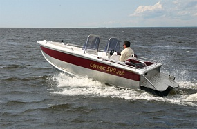

Уважаемые диллеры, действующие и потенциальные, наша компания напоминает
Вам о приближающемся водном сезоне. Сейчас самое время планировать и
начинать закупки лодок и катеров. На данный момент еще действуют цены
2012г.
Так же, просим обратить внимание на новые модели, выпущенные в 2012-2013г.
К сведению потенциальных дилеров - желая и умея строить
взаимовыгодные и долгосрочные взаимоотношения, мы дифференцированно
подходим к каждому отдельно взятому региону. Принимая во внимание
покупательскую способность, запросы розничных потребителей и условия
эксплуатации водного транспорта.
Мы всегда готовы к диалогу и с удовольствием выслушаем Ваши предложения по вопросам сотрудничества.
Обращаем внимание, сроки изготовления готовой продукции, одни из минимальных среди отечественных производителей.
Наша компания будет принимать участие в 6-й международной выставке катеров и яхт - "Moscow Boat Show".
На выставке будут представлены наши новые модели:
- Катер «Корвет-580»
- Катер РИБ «Марлин-900» серии PRO.
Также по пожеланию наших Заказчиков мы обновили, уже давно зарекомендовавшие себя катера.
Мы рады сообщить Вам, что наш модельный ряд пополнился. Мы вышли на
новый уровень. Новинкой стала алюминиевая яхта «Корвет-970».
Технические характеристики катера:
Длина наибольшая, м -11.10
Ширина наибольшая, м -3,25
Катер предназначен для выполнения поисковых, аварийно-спасательных,
патрульно-инспекционных, водолазных работ и служебно-разъездных
функций, функций пожаротушения.
Отобразить еще